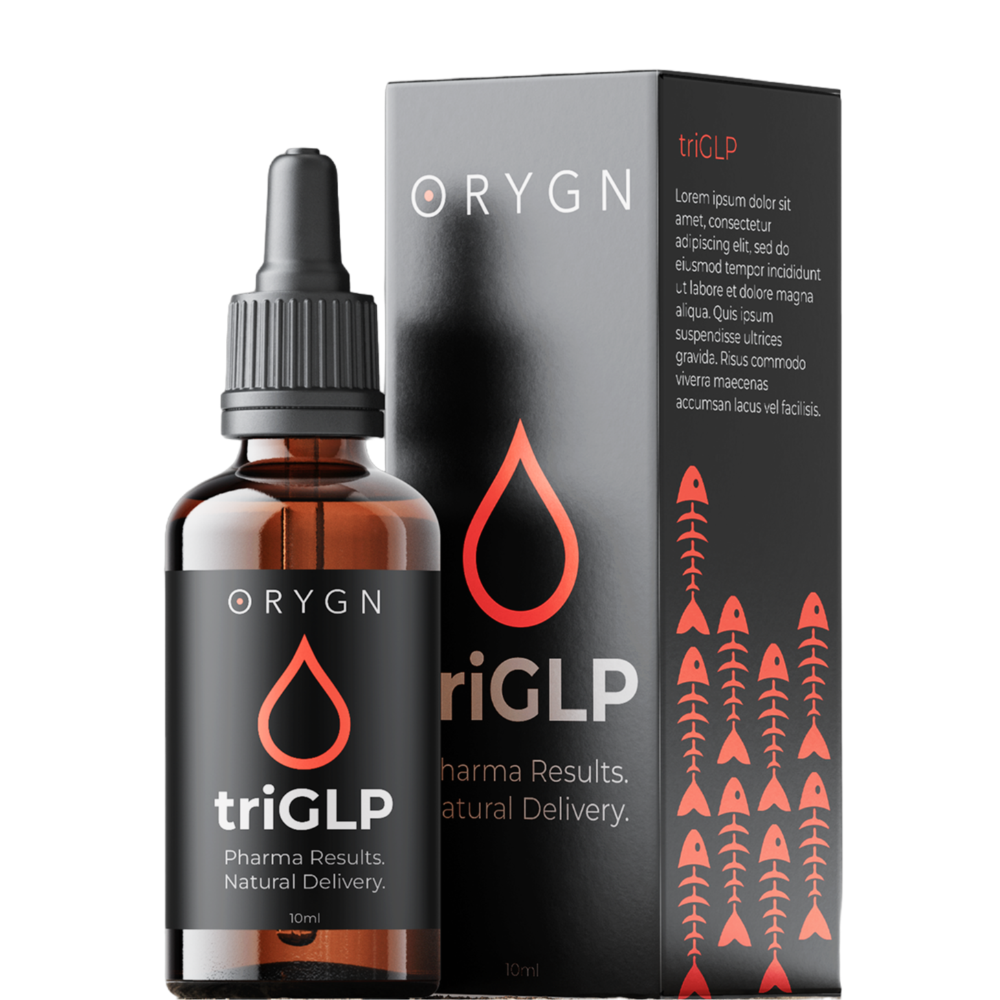

triGLP is a Norwegian salmon protein hydrolysate formula, double patent-protected by ORYGN, taken as drops. It supports GLP-1, GIP and GLP-2 pathway activation with no prescription and no injection required.
Affiliate link — we may earn a commission at no extra cost to you.

Long-term calorie restriction fails most people not because of discipline, but because of biology. As body fat drops, the hormones that regulate hunger (including GLP-1, GIP and GLP-2) shift in ways that actively increase appetite and slow metabolism.
GLP-1 is a gut-derived hormone that signals satiety to the brain, slows gastric emptying, and supports insulin regulation. GLP-2 supports gut barrier integrity. GIP works alongside GLP-1 in nutrient-stimulated insulin release. Together, these pathways form the biological mechanism behind why pharmaceutical GLP-1 drugs have shown significant weight loss outcomes in clinical trials.
Supporting these pathways naturally, rather than overriding them pharmaceutically, means a different mechanism and a different risk profile.
Norwegian salmon protein hydrolysate, a bioactive peptide complex derived from salmon and double patent-protected by ORYGN. Taken as drops, not capsules or injections. No prescription required, no medical appointment needed. Ingredients: Norwegian Salmon Protein Hydrolysate, Deionised Water, Organic Lemon Peel Extract, Organic Ginger Root Extract.
triGLP is formulated to support GLP-1, GLP-2 and GIP pathway activation, the same biological pathways targeted by pharmaceutical weight loss drugs. The mechanism is natural and peptide-based, not synthetic. According to ORYGN's clinical data, users may experience meaningful results including BMI reduction and improvements in fasting blood glucose within 6–8 weeks.
Pharmaceutical GLP-1 drugs are synthetic hormone analogues delivered by injection and require a prescription. triGLP is a natural, patent-backed supplement in drop form that supports the same biological pathways through a different mechanism. Anyone can buy it. No prescription, no injection, no clinic visit.
This is not Ozempic. This is not a miracle. It is a natural, patent-backed formula in drop form that supports the same biological pathways as pharmaceutical GLP-1 drugs, through a completely different mechanism. No prescription. No injection. Available to anyone.
According to ORYGN's clinical data, users may experience approximately 6–7% BMI reduction in 6–8 weeks, a 10% decrease in body fat with zero muscle loss, and a 3–6% reduction in fasting blood glucose. These figures come from ORYGN's own data and have not been independently verified by The Restart Code.
We cover triGLP because the mechanism is backed by a double patent, the ingredient profile is transparent, and the formulation targets a pathway with a strong and growing evidence base. That's the honest version.
Affiliate link — we may earn a commission at no extra cost to you.
triGLP is a natural supplement made from Norwegian salmon protein hydrolysate, a bioactive peptide complex double patent-protected by ORYGN. It is taken as drops, not capsules or injections, and no prescription is required. It is formulated to support GLP-1, GLP-2 and GIP pathway activation, the biological pathways that regulate hunger signalling, satiety and metabolic function. Ingredients: Norwegian Salmon Protein Hydrolysate, Deionised Water, Organic Lemon Peel Extract, Organic Ginger Root Extract.
No. They target the same biological pathway but through a completely different mechanism. Ozempic (semaglutide) is a synthetic GLP-1 receptor agonist, a pharmaceutical drug delivered by injection that requires a prescription and medical supervision. triGLP is a natural supplement in drop form derived from Norwegian salmon protein hydrolysate. No prescription required, no injection. It's a completely different product with a completely different mechanism. The shared aspect is the pathway they each target.
triGLP is taken as drops, as directed by ORYGN's usage guidelines. No injection. No prescription required. For specific dosage instructions, refer to the product information on the ORYGN website.
triGLP is a natural supplement, not a pharmaceutical drug. However, we always recommend consulting a qualified healthcare professional before starting any new supplement, particularly if you have an existing health condition, are pregnant or breastfeeding, or are taking medication. This page is informational. It does not constitute medical advice.